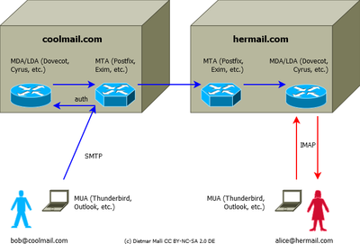

Mailserver-Einführung
 Ein Mailserver ist kein einzelner Dienst. Vielmehr setzt sich ein Mailsystem aus unterschiedlichen Komponenten zusammen, die nicht einmal auf demselben Rechner laufen müssen (und es bei größeren Installationen meist auch nicht tun).
Ein Mailserver ist kein einzelner Dienst. Vielmehr setzt sich ein Mailsystem aus unterschiedlichen Komponenten zusammen, die nicht einmal auf demselben Rechner laufen müssen (und es bei größeren Installationen meist auch nicht tun).
Ein Mailsystem kann folgende Komponenten beinhalten:
MTA (Mail Transfer Agent)/SMTP-Server: zuständig für den Transport der Mail von einem System zum anderen (mehr zu MTA und SMTP)
MDA (Mail Delivery Agent): stellt die Post auf dem lokalen System zu (mehr zu MDA)
MRA (Mail Retrieval Agent): holt Post von einem entfernten Server ab (mehr zu MRA)
IMAP-/POP3-Server: hält die Post für den Endbenutzer bereit, damit er sie mit seinem Mailprogramm (MUA - Mail User Agent) abholen und lesen kann (mehr zu IMAP, POP3 und MUA)
Sonstige Zusatzkomponenten, die die Funktionalität des Mailsystems erweitern. Beispielsweise eine Weboberfläche oder automatische Filterfunktionen hinzufügen.
Das heißt aber noch lange nicht, dass man auf jeden Fall mindestens vier oder fünf verschiedene Dienste laufen lassen muss, um einen Mailserver zu betreiben. Oft ist bspw. der Delivery Agent in den Transfer Agent integriert oder der MRA in das Benutzer-Mailprogramm. Manche Leute verwenden nur entweder IMAP oder POP3, andere benutzen einen Server, der beide Protokolle beherrscht. Oder man setzt einen MTA nur ein, um sich automatisch generierte E-Mails des Betriebssystems, Diensten oder Webanwendungen schicken zu lassen; für den Postempfang vertraut man aber weiterhin einem externen Mailprovider.
Man sieht, ein Mailserver gleicht selten dem anderen. Man sollte nur die Dienste einrichten, die man auch später nutzen möchte (oder seinen Nutzern anbieten will). Für einen funktionierenden Mailserver, der Mail sowohl versenden als auch empfangen kann, benötigt man jedenfalls in der Regel mindestens einen MTA und einen POP3-/IMAP-Server.

Um eine bessere Vorstellung für den Ablauf einer durchaus üblichen simplen Mail-Kommunikation kann man auch einen Blick auf das Bob und Alice Beispiel im Bild rechts werfen. Wie oben schon erwähnt müssen die Komponenten nicht zwingend auf einem Server liegen oder in dieser Reihenfolge angeordnet sein. Eine solche Konfiguration ist allerdings für privat betriebene Mailserver durchaus üblich und verdeutlicht die Grundidee.
Bob verbindet sich mithilfe seines MUA über das SMTP Protokoll mit einem MTA. Dieser versucht Bob über den MDA (manchmal auch LDA genannt) zu authentifizieren. Nach der Authentifizierung leitet der MTA von Bob's Provider die Mail zum MTA von Alice's Provider weiter. Dieser übergibt sie Alices MDA. Dort bleibt die Mail erstmal. Zu einem anderen Zeitpunkt verwendet Alice ihren MUA um die Nachrichten im Postfach ihres MDA's über das IMAP Protokoll herunterzuladen.
Manchmal werden auch bestimmte Funktionen mehrfach hintereinander auf unterschiedliche Weise ausgeführt. Zum Beispiel könnte man einen MRA wie Fetchmail wählen, um die Mail erst mal per POP3 von einem anderen Server zu holen. Dieser leitet die Post dann an einen lokalen SMTP- (Postfix) oder IMAP-Server (Dovecot) weiter, der sie zunächst an einen Viren- und/oder Spamfilter weiterleitet. Von dort gelangt die Post wieder an den MTA zurück, der sie dann über einen Delivery Agent (bspw. den in Postfix integrierten) auf die verschiedenen Postfächer verteilt, von wo der Endbenutzer sie mit seinem Retrieval/User Agent (z.B. Evolution oder Thunderbird) per POP3 oder IMAP abholen kann.
Anleitungen zur Installation einzelner Komponenten findet man auf der Übersichtsseite Serverdienste.
Anleitungen für Komplett-Setups¶
Mailserver mit Postfix, Dovecot, MySQL-Backend, DKIM und Rspamd Spamfilter: Mailserver-Anleitung 2017 von Thomas Leister
 (Für Debian 9 Stretch, allerdings auf Ubuntu Server übertragbar | sehr ausführlich, mit Erklärungen)
(Für Debian 9 Stretch, allerdings auf Ubuntu Server übertragbar | sehr ausführlich, mit Erklärungen)Sehr einfach einzurichtender Mailserver via Docker: Mailcow dockerized (inkl. Weboberfläche)
Mailserver-Howto 2016 von Thomas Leister für Ubuntu Server 16.04 LTS
Mailserver on Ubuntu with anti-Spam configuration in 60 minutes: Postfix, Dovecot, SASL authentication, Postgrey, DKIM, SPF
 - Schritt-für-Schritt-Anleitung, 06/2014
- Schritt-für-Schritt-Anleitung, 06/2014A Mailserver on Ubuntu 12.04: Postfix, Dovecot, MySQL
- ausführliche Anleitung in Englisch , 05/2012Der perfekte Mailserver
- unter Debian 5.0, jedoch auf Ubuntu übertragbar
Links¶
Robuste Mailserver einrichten
- dreiteiliges Tutorial von Peer Heinlein, 01/2010

How to convince Hotmail to deliver your messages to the receipts mailbox
- Blogbeitrag, 09/2015
- Erstellt mit Inyoka
-
 2004 – 2017 ubuntuusers.de • Einige Rechte vorbehalten
2004 – 2017 ubuntuusers.de • Einige Rechte vorbehalten
Lizenz • Kontakt • Datenschutz • Impressum • Serverstatus -
Serverhousing gespendet von